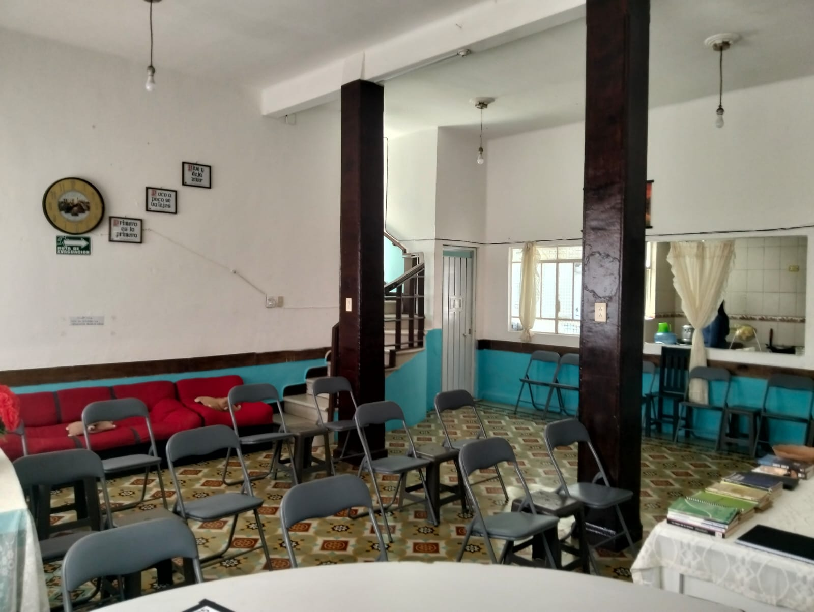
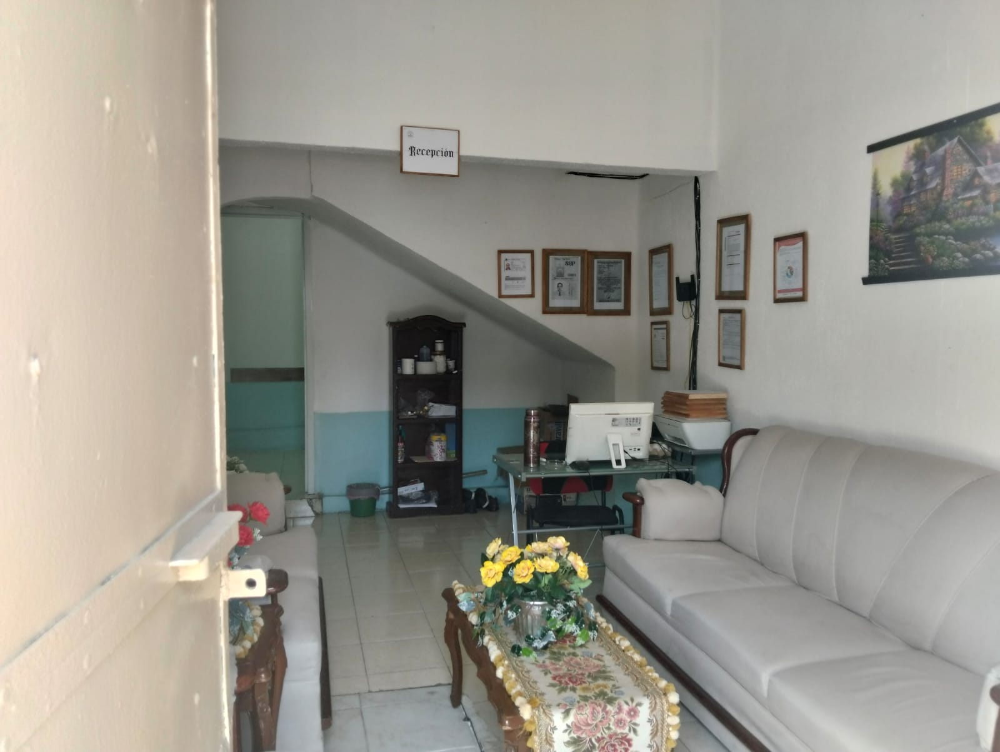
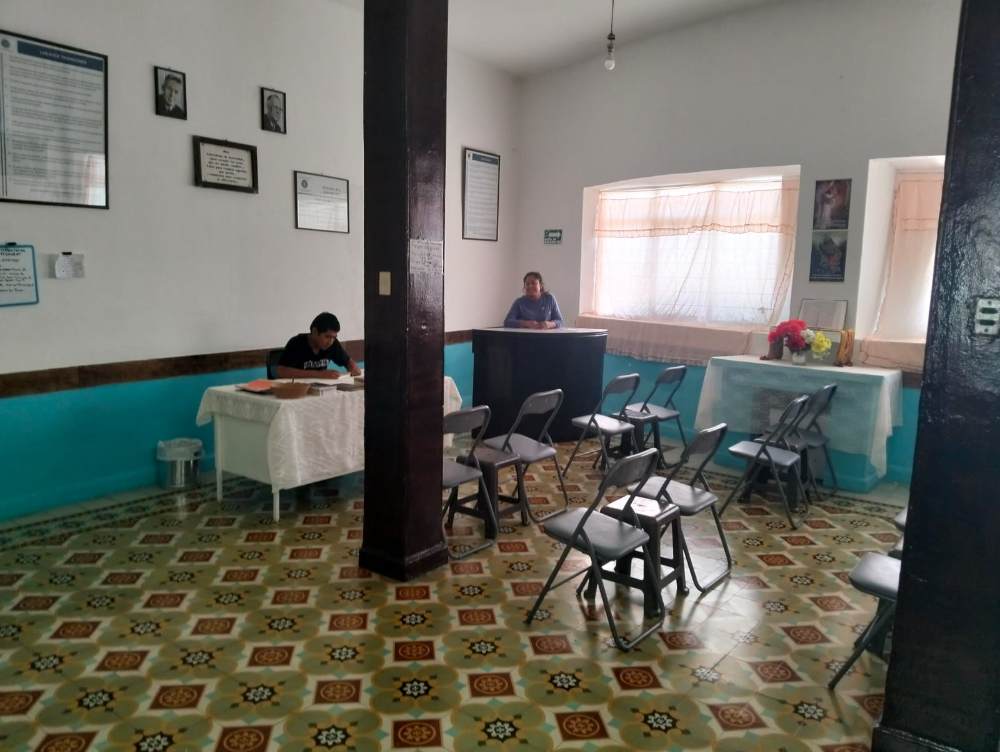
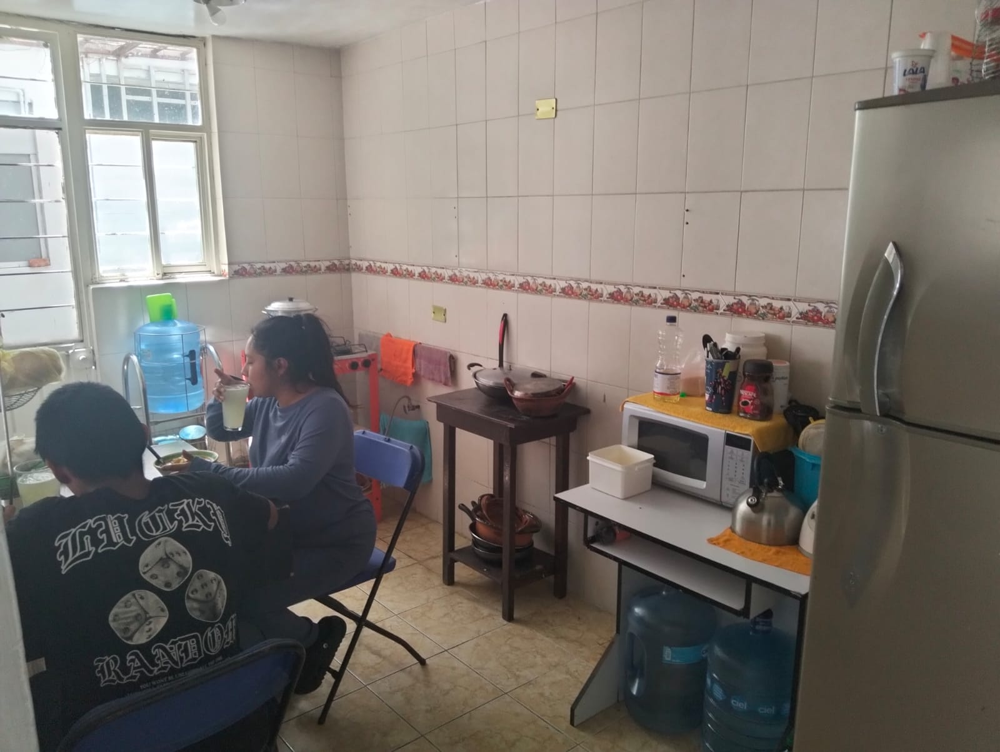
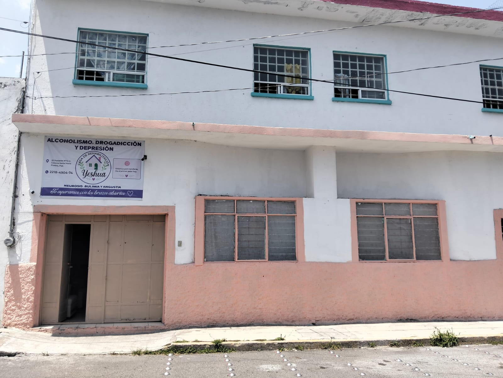
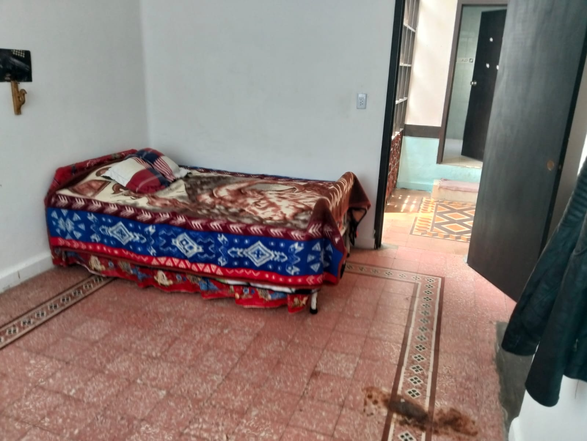

Yeshua Centro de Rehabilitación — Puebla, Puebla
Sana, crece y vive
en verdad.
Tratamiento especializado en |
Creemos que la recuperación es posible. En Yeshua acompañamos a cada paciente y a su familia con atención médica, psicológica y espiritual, en un entorno seguro donde es posible volver a empezar. Encuentro contigo mismo.

bajo un mismo techo
Sobre Yeshua
Un espacio para sanar, crecer y vivir en verdad.
Yeshua Centro de Rehabilitación es un centro especializado en el tratamiento de adicciones, ubicado en Colonia Santa María, Puebla. Ofrecemos rehabilitación integral para quienes enfrentan el alcoholismo, la drogadicción y la depresión, a través del acompañamiento emocional y la atención personalizada — creando un entorno propicio donde cada paciente puede sanar, crecer y vivir en verdad.
Atención Médica
Tratamientos médicos supervisados que cuidan tu salud física durante todo el proceso de recuperación.
Apoyo Psicológico
Acompañamiento emocional personalizado para sanar heridas profundas y reconstruir tu bienestar mental.
Acompañamiento Espiritual
Un proceso que también nutre el alma, ayudándote a redescubrir tu identidad y tu propósito. Encuentro contigo mismo.
Nuestros Tratamientos
Un programa integral para cada tipo de lucha.
Atendemos distintas problemáticas con el mismo compromiso: acompañarte hasta tu recuperación completa.

Alcoholismo y Drogadicción
Un proceso de contención y recuperación guiado por nuestro equipo, en un ambiente seguro y de acompañamiento constante.
- Contención y acompañamiento durante el proceso de recuperación
- Seguimiento médico a lo largo de todo el tratamiento
- Terapia individual y de grupo
- Programa por fases, adaptado a cada paciente

Depresión, Neurosis y Angustia
Trabajamos las causas emocionales de fondo, no solo los síntomas, para lograr una recuperación duradera.
- Terapia psicológica individual
- Espacios de encuentro y trabajo grupal
- Acompañamiento espiritual
- Herramientas para el manejo de la ansiedad y la angustia

Bulimia
Acompañamiento integral para recuperar una relación sana con el cuerpo, la alimentación y las emociones.
- Atención personalizada y supervisada
- Apoyo psicológico continuo
- Convivencia en un entorno de contención
- Seguimiento cercano a lo largo del proceso
¿No sabes por dónde empezar? Escríbenos y con gusto te orientamos, sin compromiso.
Consultar por WhatsApp¿Por qué Yeshua?
El acompañamiento que mereces para recuperar tu vida.
Atención Personalizada
Cada paciente recibe un acompañamiento hecho a su medida, no un tratamiento genérico.
Acompañamiento Espiritual
Sanamos el cuerpo y la mente, sin dejar de lado el alma, con un enfoque humano y cercano.
Instalaciones Seguras
Espacios comunes y privados, pensados para que cada residente se sienta protegido y en calma.
Equipo Comprometido
Un equipo dedicado a caminar contigo en cada etapa de tu proceso de recuperación.
Proceso de Ingreso
Dar el primer paso es más sencillo de lo que crees.
Primer Contacto
Escríbenos por WhatsApp o llena el formulario. Escuchamos tu situación con total confidencialidad.
Evaluación y Orientación
Platicamos contigo y tu familia para entender el caso y explicarte cómo es el proceso de ingreso.
Inicio de la Recuperación
Comienza tu tratamiento integral, con acompañamiento médico, psicológico y espiritual día a día.
Instalaciones
Un espacio real, pensado para tu recuperación.
Así son los espacios comunes y privados de nuestro centro en Colonia Santa María, Puebla.

Nuestras instalaciones en Colonia Santa María, Puebla
Habitaciones — descanso digno y privadoContacto
Da el primer paso hoy mismo.
Escríbenos, llámanos o visítanos. Nuestro equipo está listo para orientarte a ti o a tu familia con total confidencialidad.
-
32 Poniente #712-A, Colonia Santa María, Puebla, Puebla
Cómo llegar (Google Maps) -
+52 221 849 0474 (WhatsApp — línea principal)
+52 222 705 4582 (línea adicional) -
jose_jesus40@hotmail.com
josejesusgm42@gmail.com - Atención mediante cita previa
Escríbenos directamente
Completa el formulario y te contactamos por WhatsApp de inmediato.